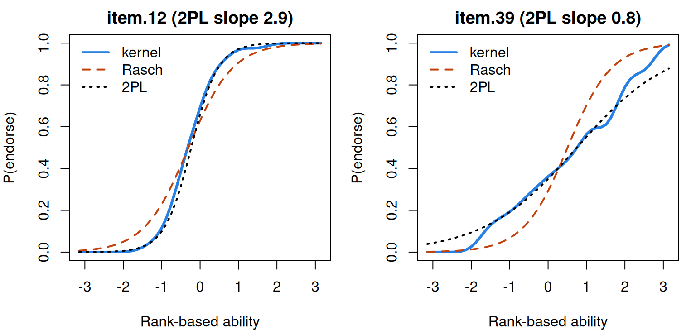
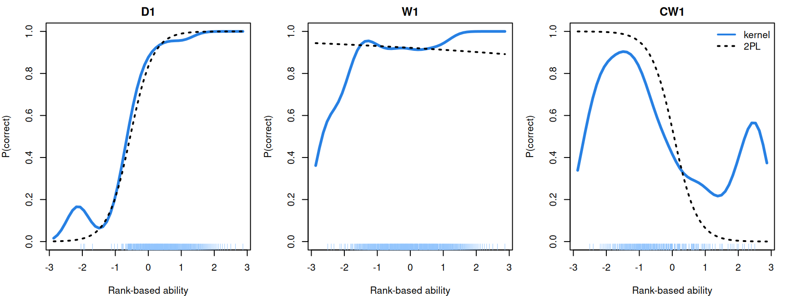

Nonparametric IRT: Mokken scaling
What this is for
The Rasch model says three things about each item: one latent variable drives it, responses are independent given that variable, and its curve is a logistic with slope 1. If the job is only to order respondents by their sum score, how much of that do we need? Rather little. Drop the formula, keep only that the curve never falls, and the sum score still orders respondents on \(\theta\). This is the monotone homogeneity model at the core of Mokken scaling (Mokken, 1971), and its checks need no fitted curve. This lesson is about those checks and what they can’t see: a clinical inventory whose items all rise but whose curves cross, and balance-scale problems on which children who do better on the rest of the test do worse.
Goals
By the end of this lesson you should be able to:
- state the monotone homogeneity model and what it buys without a parametric curve;
- compute Loevinger’s \(H\) from Guttman errors, and read item and scale \(H\);
- check monotonicity in rest-score groups, and say why the rest score is used;
- explain invariant item ordering and its link to crossing curves and specific objectivity;
- draw a kernel-smoothed item curve, say what the bandwidth trades off, and compare it with a logistic curve;
- say which claims about a scale a Mokken analysis in
mokkensupports.
Core ideas
The Rasch model’s assumptions without its curve
The monotone homogeneity model (MHM) keeps both assumptions and replaces the formula with an inequality. For every item \(i\), the curve \(P_i(\theta) = \Pr(x_i = 1 \mid \theta)\) is nondecreasing in \(\theta\): it may be steep or flat, S-shaped or lumpy, but it never goes down (Mokken, 1971; Sijtsma & Molenaar, 2002). Every logistic model with a positive slope is a special case.
What does so weak a model buy? First, every pair of items has a non-negative covariance, in every population (Holland & Rosenbaum, 1986), so a negative one is evidence against the model. Second, for dichotomous items, respondents with higher sum scores have, as a group, higher \(\theta\): the sum score orders respondents stochastically (Grayson, 1988). Under the Rasch model the sum score is sufficient; the MHM keeps only the order. For polytomous items even the order can fail (Hemker, Sijtsma, Molenaar & Junker, 1997).
Scalability: Loevinger’s H
Suppose items could be ordered perfectly: anyone who endorses a harder item also endorses every easier one. That is a Guttman scale (Guttman, 1944), and a respondent who gets the harder item of a pair right and the easier one wrong commits a Guttman error. Real items make errors. How many, compared with what?
Take items \(i\) and \(j\) with proportions \(p_i \le p_j\), so \(i\) is the harder. If the items were independent, the expected number of errors among \(N\) respondents would be \(N p_i (1 - p_j)\). Loevinger’s coefficient (Loevinger, 1948) compares observed with expected: \[H_{ij} = 1 - \frac{\text{observed Guttman errors}}{\text{expected Guttman errors under independence}} = \frac{\operatorname{cov}(x_i, x_j)}{\operatorname{cov}_{\max}(x_i, x_j)},\] where \(\operatorname{cov}_{\max} = p_i(1 - p_j)\) is the largest covariance the two proportions allow (problem 1). 1 means no errors, 0 as many as chance. Pooling numerators and denominators over the pairs involving item \(i\) gives \(H_i\), and over all pairs the scale’s \(H\) (Sijtsma & Molenaar, 2002). By convention every \(H_i\) should exceed a bound \(c\), usually 0.3, and an \(H\) of 0.3–0.4 is called weak, 0.4–0.5 medium, and 0.5 or more strong (Mokken, 1971; summarized in Sijtsma & van der Ark, 2017, pp. 145–146). These are conventions for describing a scale, not tests with a known error rate.
Try it: Guttman errors for two items
A thousand simulated respondents answer two items with a common slope. Item A is the easier when its difficulty is lower.
At a slope of 0, \(H\) hovers around 0; raise the slope and errors become rarer. Now move the difficulties apart: \(H\) rises again, since an error needs a respondent between the two items. So \(H\) depends on the slopes and the spacing of the items, which merits comment before comparing \(H\) across scales. Turn on the toggle and errors outnumber chance: \(H\) is negative, which the MHM forbids.
If you’ve done Unfolding models: MUDFOLD’s \(H\) is this coefficient with a different definition of an error, one built for statements whose curves peak.
Building scales from the bottom up: automated item selection
Which items in a pool form a scale? Mokken’s automated item selection procedure (AISP) starts with the most scalable pair, adds items while every \(H_i\) stays above the bound \(c\), and starts a second scale from the leftovers (Mokken, 1971; van der Ark, 2012). Raising \(c\) splits scales into smaller ones; a genetic algorithm that searches whole partitions sometimes does better than adding one item at a time (Straat, van der Ark & Sijtsma, 2013). Sijtsma and van der Ark (2017) describe AISP as a first look at a pool whose structure isn’t known: it groups items and says nothing about why they belong together.
Checking monotonicity in rest-score groups
How do we check that a curve never falls when we never see \(\theta\)? Use the rest score \(R_{(i)}\) in its place. Under the MHM, \(\Pr(x_i = 1 \mid R_{(i)} = s)\) is nondecreasing in \(s\) (Junker & Sijtsma, 2001; Sijtsma & Molenaar, 2002, ch. 5). Not the sum score, which contains the item and so builds part of the rise into the check. mokken pools adjacent rest scores into groups of a minimum size (\(N/10\) by default when \(N \ge 500\)) and compares every pair of groups: a drop larger than 0.03 is a violation, and a one-sided test says whether it is significant (van der Ark, 2007).
Try it: rest-score groups
A thousand simulated respondents answer ten ordinary items and one target item whose true curve you choose. Groups involved in a significant drop are drawn in orange; the grey bars show which rest scores each group pools.
The logistic item rises through every group. The flat item wobbles, with four drops above 0.03 and none significant; a flat curve doesn’t break the MHM anyway, and what gives it away is an \(H_i\) near zero. The item that rises and falls drops significantly from the middle groups to the top one. Small groups make noisy proportions and more small drops; large groups can swallow a fall confined to one end.
Invariant item ordering: when the curves don’t cross
Monotonicity says nothing about whether curves cross. Adding “the curves don’t cross” to the MHM gives the double monotonicity model, whose content is invariant item ordering (IIO): the items come in the same order of difficulty for every respondent (Sijtsma & Junker, 1996). This is the ordinal part of specific objectivity. The Rasch model implies IIO; the 2PL generally doesn’t. When does it matter? When an interpretation rests on the order of the items: a developmental sequence, a hierarchy of symptoms.
Try it: how many respondents does a crossing affect?
At the defaults the curves cross at \(\theta = 1.5\), and the 6.7% of respondents above it find item B the easier. Pull the difficulties apart and the crossing moves into the tails; bring them together and the share approaches half. Unequal slopes matter for IIO in practice only when the curves cross where the respondents are.
Kernel-smoothed item curves
Can we draw a whole item curve without assuming its shape? Ramsay (1991) proposed a kernel smoother. Turn the ranks of the sum scores into standard normal quantiles, a stand-in for \(\theta\) that uses only order, and estimate \(P_i(t)\) by a weighted average of the item’s responses, with weights falling off with distance from \(t\) (the Nadaraya–Watson estimator; Nadaraya, 1964; Watson, 1964): \[\hat P_i(t) = \frac{\sum_j K\big((t - \hat\theta_j)/h\big)\, x_{ij}}{\sum_j K\big((t - \hat\theta_j)/h\big)},\] with \(K\) the normal density, \(\hat\theta_j\) respondent \(j\)’s rank-based ability and \(h\) the bandwidth; KernSmoothIRT (Mazza, Punzo & McGuire, 2014) defaults to Silverman’s \(h = 1.06\,N^{-1/5}\) (Silverman, 1986). This lesson writes the smoother out in R, and on the MCMI data it reproduces KernSmoothIRT.
Try it: the bandwidth
A thousand simulated respondents answer 30 ordinary items and one target item. Their rank-based abilities come from the sum of all 31.
With the default bandwidth the kernel curve rises to about 0.8 and falls back to about 0.2 (a little below the true peak, since the rank-based abilities are noisy), while the logistic fit, which can only rise or fall, draws a gentle line through it. Shrink \(h\) toward 0.05 and the curve turns jagged; push it past 1 and the peak flattens, as each point averages over respondents far away. Switch to the logistic item and the kernel and the logistic fit nearly coincide. A kernel curve is a check on a parametric curve, not a replacement for one: where the two agree, the parametric model’s extra assumptions cost little; where they part, the kernel shows how (Douglas & Cohen, 2001).
Where does this leave us? The models differ in what they assume about each curve: that it rises (MHM); that it rises and crosses no other (double monotonicity); that it has a particular shape (Rasch, 2PL). Each claim about a scale leans on a different one. That the sum score orders respondents leans only on the MHM, which \(H\) and the rest-score checks test while asking little of the data. That the items come in a fixed order leans on double monotonicity, and needs its own check. Comparing items across forms or groups, or stating precision at a point on the scale, leans on a parametric curve: the kernel curves show where that curve departs from the data, and held-out responses show how much its extra structure buys in prediction (Model fit and out-of-sample prediction).
Simulate
The code below simulates 1,000 respondents on ten 2PL items (slopes 0.5 to 2.5) and one item whose curve rises and then falls, runs the mokken checks, and draws two kernel curves with logistic fits. The first run takes about 20 seconds while R and mokken load.
With the seed as written, the 2PL items have \(H_i\) from 0.15 to 0.53, rising with the slope; the scale \(H\) is 0.27; the eleventh item has \(H_i\) of 0.02 and four significant violations. Item selection at 0.3 drops the two flattest items and the eleventh, and the IIO check removes the same two flattest (\(H^T\) for the rest: 0.41). The kernel and logistic curves agree for i10 and part for the eleventh item. Now set a <- rep(1, 10), the Rasch model: no item is removed, \(H^T\) is 0.28, and \(H\) drops to 0.20, below Mokken’s bound, though the model holds exactly. \(H\) measures how sharply items separate respondents, not whether a model is true.
Download this code to run it as large as you like in your own R session.
With real data
We use two tables, the mokken package (van der Ark, 2007) and, for the parametric comparison, mirt (Chalmers, 2012); download the code.
Code
library(mokken) # van der Ark (2007, 2012)
library(mirt) # Chalmers (2012), for the parametric comparison
# IRW tables are long (one row per respondent-item response); mokken wants one row
# per respondent and one column per item.
long2wide <- function(df) as.data.frame(tapply(df$resp, list(df$id, df$item), function(x) x[1]))
# Kernel-smoothed item curves (Ramsay, 1991): rank the sum scores (ties by order),
# turn the ranks into standard normal quantiles, and take a Gaussian-weighted
# average of each item's responses around each evaluation point.
kernel_icc <- function(X, h = 1.06 * nrow(X)^(-1/5), npoints = 51) {
n <- nrow(X)
th <- qnorm(rank(rowSums(X), ties.method = "first") / (n + 1))
at <- seq(qnorm(1 / (n + 1)), qnorm(n / (n + 1)), length.out = npoints)
W <- dnorm(outer(at, th, "-") / h)
list(at = at, theta = th, h = h,
P = sapply(X, function(y) as.vector(W %*% y / rowSums(W))))
}A clinical inventory: monotone, but crossing
The main example is mcmi_mokken: 44 true/false items from a Dutch version of the Millon Clinical Multiaxial Inventory-III, answered by 1,208 patients and inmates (Rossi, Elklit & Simonsen, 2010); the 44-item subset was assembled by de la Torre, van der Ark and Rossi (2018) for diagnostic classification models. Its job is to show a scale whose items all rise but whose curves cross. A response is 1 if the item was endorsed. The items are deidentified, so we have their numbers but not their text.
Code
# Each IRW table has a landing page (itemresponsewarehouse.org/tables/<name>/)
# with a CSV download. This link is pinned to one version of the data.
mcmi_url <- "https://redivis.com/api/v1/tables/datapages.item_response_warehouse:v64_0.mcmi_mokken/rows?format=csv"
mcmi <- long2wide(read.csv(mcmi_url))
mcmi <- mcmi[, order(as.integer(sub("item.", "", names(mcmi), fixed = TRUE)))]
c(respondents = nrow(mcmi), items = ncol(mcmi), missing = sum(is.na(mcmi)))respondents items missing
1208 44 0 Code
summary(colMeans(mcmi)) # proportion endorsing each item Min. 1st Qu. Median Mean 3rd Qu. Max.
0.1167 0.2866 0.3899 0.3823 0.4888 0.6722 Code
H <- coefH(mcmi, se = FALSE, results = FALSE)
round(c(scale_H = H$H, min_Hi = min(H$Hi), max_Hi = max(H$Hi),
min_Hij = min(H$Hij[upper.tri(H$Hij)]), max_Hij = max(H$Hij[upper.tri(H$Hij)])), 2)scale_H min_Hi max_Hi min_Hij max_Hij
0.42 0.25 0.60 0.10 0.85 Code
round(sort(H$Hi)[1:3], 2) # the three least scalable itemsitem.39 item.26 item.42
0.25 0.28 0.29 The scale \(H\) is 0.42, medium by Mokken’s convention. Every \(H_i\) is between 0.25 and 0.60, and items 39, 26 and 42 are the only ones below the usual bound of 0.3. Item selection agrees:
Code
# Automated item selection at three lower bounds. Each column gives each item's
# scale (1, 2, ...), 0 meaning unscalable. Tabulated: how many items in each.
sel <- aisp(mcmi, lowerbound = c(0.3, 0.4, 0.5), verbose = FALSE)
lapply(as.data.frame(sel), table)$`0.3`
0 1
3 41
$`0.4`
0 1 2 3
6 33 3 2
$`0.5`
0 1 2 3 4 5 6 7 8
10 17 3 2 3 2 3 2 2 At \(c = 0.3\), 41 items form one scale; at 0.4 the main scale has 33; at 0.5 the items split into eight scales. What the smaller scales mean is a question for item content we can’t see. Monotonicity:
Code
# Rest-score groups of at least N/10 respondents; a violation is a drop of more
# than 0.03 between two groups, #zsig counts the significant ones.
mono <- summary(check.monotonicity(mcmi))
colSums(mono[, c("#ac", "#vi", "#zsig")]) #ac #vi #zsig
1417 0 0 Across 1,417 comparisons of rest-score groups, not one drop exceeds 0.03. By the checks of the MHM these 44 items form a fairly clean scale, and the sum score orders respondents. Do the curves cross?
Code
# Invariant item ordering (Ligtvoet et al., 2010): H^T for all 44 items, then the
# backward selection that removes items until no significant crossing remains.
round(check.iio(mcmi, item.selection = FALSE)$HT, 2)[1] 0.21Code
iio <- check.iio(mcmi)
c(items_removed = length(iio$items.removed), items_left = ncol(mcmi) - length(iio$items.removed))items_removed items_left
22 22 Code
round(iio$HT, 2) # H^T for the items that remain[1] 0.25Code
# The same data through a 2PL: which slopes did the selection remove?
m2 <- mirt(mcmi, 1, itemtype = "2PL", verbose = FALSE)
a <- coef(m2, simplify = TRUE)$items[, "a1"]
removed <- names(iio$items.removed)
round(rbind(removed = range(a[removed]), kept = range(a[setdiff(names(a), removed)])), 2) [,1] [,2]
removed 0.82 3.04
kept 1.03 2.19They do, often. \(H^T\) for all 44 items is 0.21, and the backward selection removes 22 items, leaving an \(H^T\) of 0.25, below the 0.28 of the simulation’s Rasch items. The removed items include both the flattest 2PL slope (0.82) and the steepest (3.04); the survivors’ slopes run from 1.03 to 2.19. Invariant item ordering and equal slopes are close relatives. (If you’ve done From the 1PL to the 4PL, the 2PL is that lesson’s model, with a slope for each item; the Rasch model’s slider in The Rasch model previewed it.) The kernel curves show it:
Code
k <- kernel_icc(mcmi)
m1 <- mirt(mcmi, 1, itemtype = "Rasch", verbose = FALSE)
# The kernel curves are on a scale with SD 1; mirt's Rasch fit estimates the SD of
# theta instead, so its curves are evaluated at at * SD to share the scale.
sd_rasch <- sqrt(coef(m1, simplify = TRUE)$cov[1, 1])
curve_at <- function(m, i, th) probtrace(extract.item(m, i), matrix(th))[, 2]
P1 <- sapply(seq_along(mcmi), function(i) curve_at(m1, i, k$at * sd_rasch))
P2 <- sapply(seq_along(mcmi), function(i) curve_at(m2, i, k$at))
mid <- abs(k$at) < qnorm(0.975) # the middle 95% of respondents
gap <- function(P) apply(abs(k$P - P)[mid, ], 2, max)
round(rbind(Rasch = summary(gap(P1)), `2PL` = summary(gap(P2))), 2) Min. 1st Qu. Median Mean 3rd Qu. Max.
Rasch 0.04 0.06 0.09 0.11 0.11 0.3
2PL 0.04 0.06 0.07 0.08 0.09 0.2Code
op <- par(mfrow = c(1, 2), mar = c(4, 4, 2, 1))
for (it in c("item.12", "item.39")) {
i <- which(names(mcmi) == it)
plot(k$at, k$P[, i], type = "l", lwd = 3, col = "#2780e3", ylim = c(0, 1),
xlab = "Rank-based ability", ylab = "P(endorse)",
main = sprintf("%s (2PL slope %.1f)", it, a[i]))
lines(k$at, P1[, i], lwd = 2, lty = 2, col = "#c2410c")
lines(k$at, P2[, i], lwd = 2, lty = 3, col = "black")
legend("topleft", c("kernel", "Rasch", "2PL"), lty = 1:3, lwd = 2,
col = c("#2780e3", "#c2410c", "black"), bty = "n")
}
Code
par(op)
at_show <- c(-1.9, -1.3, -0.6, 0, 0.6, 1.3)
idx <- sapply(at_show, function(t) which.min(abs(k$at - t)))
round(rbind(ability = k$at[idx], item12_kernel = k$P[idx, "item.12"], item12_Rasch = P1[idx, 12],
item12_2PL = P2[idx, 12], item39_kernel = k$P[idx, "item.39"]), 2) [,1] [,2] [,3] [,4] [,5] [,6]
ability -1.89 -1.26 -0.63 0.00 0.63 1.26
item12_kernel 0.00 0.05 0.30 0.69 0.92 0.98
item12_Rasch 0.06 0.16 0.36 0.63 0.84 0.94
item12_2PL 0.01 0.05 0.24 0.66 0.92 0.99
item39_kernel 0.05 0.16 0.25 0.36 0.47 0.59Code
round(colMeans(mcmi)[c("item.12", "item.39")], 2) # proportion endorsing overallitem.12 item.39
0.60 0.37 Item 12’s kernel curve climbs from 0.05 to 0.92 between rank-based abilities of −1.3 and 0.6; the 2PL follows it to within 0.06 at every point shown, while the Rasch curve, held to a common slope, rises only from 0.16 to 0.84. On the flat item 39 the Rasch curve is too steep. Over the middle 95% of respondents the 2PL strays from the kernel curve by at most 0.20 (median item 0.07), the Rasch curve by up to 0.30 (median 0.09). And the two items cross: 60% of respondents endorse item 12 and 37% item 39, yet at an ability of −1.3 item 39’s kernel curve is at 0.16 and item 12’s at 0.05. An analysis that stopped at \(H\) and monotonicity would not see this.
Balance-scale problems: when the curve falls
The failure case is balance_mokken: 484 children, 25 balance-scale problems (van Maanen, Been & Sijtsma, 1989), each showing weights on pegs either side of a fulcrum and asking which way the beam tips. Its job is to show items whose curves fall. A response is 1 if correct. There are five problems of each type: weight (W) and distance (D), where only one differs, and three conflict types, with more weight on one side and more distance on the other, where the weight side goes down (CW), the distance side goes down (CD) or the beam balances (CB).
Code
balance_url <- "https://redivis.com/api/v1/tables/datapages.item_response_warehouse:v64_0.balance_mokken/rows?format=csv"
balance <- long2wide(read.csv(balance_url))
types <- c(W = "weight", D = "distance", CW = "conflict-weight",
CD = "conflict-distance", CB = "conflict-balance")
balance <- balance[, paste0(rep(names(types), each = 5), 1:5)] # grouped by type
c(respondents = nrow(balance), items = ncol(balance), missing = sum(is.na(balance)))respondents items missing
484 25 0 Code
round(tapply(colMeans(balance), rep(types, each = 5), mean)[types], 2) # p-value by type weight distance conflict-weight conflict-distance
0.95 0.70 0.62 0.20
conflict-balance
0.36 Code
Hb <- coefH(balance, se = FALSE, results = FALSE)
round(Hb$H, 2)[1] 0.1Code
round(matrix(Hb$Hi, 5, dimnames = list(1:5, names(types))), 2) # H_i, one column per type W D CW CD CB
1 0.05 0.31 -0.31 0.04 0.21
2 0.07 0.32 -0.24 -0.03 0.19
3 0.16 0.32 -0.31 0.04 0.21
4 0.11 0.31 -0.05 0.02 0.20
5 0.10 0.32 -0.04 0.19 0.20The scale \(H\) is 0.10, and three conflict-weight items have \(H_i\) from −0.24 to −0.31: children who do well on the rest of the test tend to do worse on them, which the MHM rules out. What does the curve look like? The rest-score groups below are mokken’s own, of at least 96 children each.
Code
monob <- check.monotonicity(balance)
round(monob$results[[which(monob$I.labels == "CW1")]][[2]][, c("Lo Score", "Hi Score", "N", "Mean")], 2) Lo Score Hi Score N Mean
[1,] 4 10 121 0.90
[2,] 11 14 127 0.61
[3,] 15 16 127 0.27
[4,] 17 20 109 0.17Code
sb <- summary(monob)
sb[sb[, "#vi"] > 0, c("ItemH", "#ac", "#vi", "maxvi", "#zsig")] ItemH #ac #vi maxvi #zsig
CW1 -0.31 6 6 0.73 5
CW2 -0.24 6 6 0.63 6
CW3 -0.31 6 6 0.76 6
CW4 -0.05 3 2 0.14 2
CW5 -0.04 3 2 0.13 2
CD1 0.04 6 3 0.08 0
CD2 -0.03 6 2 0.06 0
CD3 0.04 6 2 0.06 0
CD4 0.02 6 2 0.09 1CW1 falls from 0.90 to 0.17 across the four groups, and five of its six comparisons are significant drops; CW2 and CW3 behave the same way, and CW4 and CW5 fall less. The conflict-distance items show small violations, one of them significant (CD4). Item selection at \(c = 0.3\) does something informative:
Code
selb <- aisp(balance, lowerbound = 0.3, verbose = FALSE)
split(rownames(selb), selb[, 1]) # scale 0 = unscalable$`0`
[1] "W4"
$`1`
[1] "D1" "D2" "D3" "D4" "D5" "CD5" "CB1" "CB2" "CB3" "CB4" "CB5"
$`2`
[1] "W2" "W5" "CW1" "CW2" "CW3" "CW4" "CW5"
$`3`
[1] "CD1" "CD2" "CD3" "CD4"
$`4`
[1] "W1" "W3"It sorts the items largely by type, though it was told nothing about types: distance and conflict-balance (with CD5) in the first scale, all five conflict-weight items (with two weight items) in the second, four conflict-distance items in the third.
Why would stronger children do worse? Siegler (1976) proposed that children use one of a series of rules: only the weights count (Rule I); distance counts only when the weights are equal (II); both count, but a conflict means a guess (III); the two are weighed properly (IV). Rules I and II solve every conflict-weight problem, since the heavier side does go down; a child who has moved on to Rule III guesses, and is right about a third of the time (Hofman, Visser, Jansen & van der Maas, 2015, Table 1). Progress elsewhere goes with a drop on these items: the item types behave like signatures of strategies, which is a claim about latent classes rather than a continuum.
What does a parametric model make of CW1?
Code
kb <- kernel_icc(balance)
mb <- mirt(balance, 1, itemtype = "2PL", verbose = FALSE)
round(coef(mb, IRTpars = TRUE, simplify = TRUE)$items[c("W1", "D1", "CW1"), c("a", "b")], 2) a b
W1 -0.13 19.73
D1 2.94 -0.55
CW1 -2.83 0.05Code
P2b <- sapply(seq_along(balance), function(i) curve_at(mb, i, kb$at))
colnames(P2b) <- names(balance)
op <- par(mfrow = c(1, 3), mar = c(4, 4, 2, 1))
for (it in c("D1", "W1", "CW1")) {
plot(kb$at, kb$P[, it], type = "l", lwd = 3, col = "#2780e3", ylim = c(0, 1),
xlab = "Rank-based ability", ylab = "P(correct)", main = it)
lines(kb$at, P2b[, it], lwd = 2, lty = 3, col = "black")
rug(kb$theta[balance[[it]] == 1], col = "#93c5fd")
}
legend("topright", c("kernel", "2PL"), lty = c(1, 3), lwd = 2, col = c("#2780e3", "black"), bty = "n")
Code
par(op)
idx <- sapply(c(-2.3, -1.7, -0.6, 0, 0.6, 1.1, 1.7), function(t) which.min(abs(kb$at - t)))
round(rbind(ability = kb$at[idx], CW1_kernel = kb$P[idx, "CW1"], CW1_2PL = P2b[idx, "CW1"],
W1_kernel = kb$P[idx, "W1"], W1_2PL = P2b[idx, "W1"]), 2) [,1] [,2] [,3] [,4] [,5] [,6] [,7]
ability -2.29 -1.72 -0.57 0.00 0.57 1.15 1.72
CW1_kernel 0.75 0.89 0.64 0.42 0.30 0.24 0.27
CW1_2PL 1.00 0.99 0.85 0.54 0.19 0.04 0.01
W1_kernel 0.63 0.87 0.92 0.92 0.92 0.96 1.00
W1_2PL 0.94 0.94 0.93 0.92 0.92 0.91 0.90Code
# How many children sit beyond -2 and 2 on the rank-based scale? (The rug marks
# the children who answered each problem correctly.)
c(below_minus_2 = sum(kb$theta < -2), above_2 = sum(kb$theta > 2))below_minus_2 above_2
11 11 On D1 kernel and 2PL agree. For CW1 the 2PL has a slope of −2.83 and does what a logistic curve must: it falls all the way, from 1.00 to 0.01. The kernel curve rises to 0.89 near an ability of −1.7, falls to 0.24 by 1.1 and stays near a quarter up to 1.7, not far from a guesser’s one in three. (The ends of the kernel curves rest on few children, 11 below −2 and 11 above 2, so CW1’s upturn at the top and D1’s bump at the bottom carry little weight.) For W1, which nearly every child solves, the 2PL is flat at about 0.9 while the kernel curve rises from 0.63 to 1.00. A single continuum doesn’t describe these items, and the kernel curves show where each parametric curve departs from the data.
Problems
- H from first principles. For two dichotomous items with \(p_i \le p_j\), show that the largest covariance the margins allow is \(p_i(1 - p_j)\), and that covariance over this maximum equals one minus observed over expected Guttman errors. What is the smallest possible covariance, and \(H_{ij}\) there?
- Strategies in the balance data. Run
aisp()onbalance_mokkenat \(c\) = 0.3, 0.4 and 0.5. Which item types stay together as \(c\) rises? Write down what each of Siegler’s rules predicts on the five types. Which items should scale together, and does AISP agree? - Which claims survive? The MCMI items have \(H\) = 0.42, no monotonicity violations, and \(H^T\) = 0.21. Does the analysis support these claims, and why: (a) the sum score orders patients on the trait; (b) every patient is likelier to endorse item 12 than item 3; (c) a 5-point difference means the same anywhere on the scale?
- Pupils rating teachers. In swmd_mokken, 651 pupils in 30 classes rate their teachers on seven items scored 1–5 (from the COOL5-18 study;
idis the class andraterthe pupil; also shipped asirw::swmd_mokken). Compute \(H\) with pupils as respondents, then the two-level coefficients of Koopman, Zijlstra and van der Ark (2020) withMLcoefH(). Is this a scale for pupils or for teachers? What would a claim about classes need? - Where the crossing is. Two 2PL items have slopes 1 and 2 and difficulties 0 and 0.5. Where do their curves cross, and what share of a N(0, 1) population lies on each side? Check with the crossing widget. For which difficulty gaps would you worry about IIO?
- Challenge (open). Build a test of a fitted 2PL curve against the kernel curve, following Douglas and Cohen (2001). What is the null distribution of the largest gap, and how should the bandwidth and the estimated rank-based abilities enter it? Try it on CW1 and MCMI item 39.
Going further
- Mokken, R. J. (1971). A theory and procedure of scale analysis. De Gruyter Mouton. https://doi.org/10.1515/9783110813203. Where the monotone homogeneity model, \(H\) and item selection start.
- Sijtsma, K., & Molenaar, I. W. (2002). Introduction to nonparametric item response theory. Sage. https://doi.org/10.4135/9781412984676. A short introduction to the models and their checks.
- Sijtsma, K., & van der Ark, L. A. (2017). A tutorial on how to do a Mokken scale analysis on your test and questionnaire data. British Journal of Mathematical and Statistical Psychology, 70(1), 137–158. https://doi.org/10.1111/bmsp.12078. A step-by-step guide with
mokken, including the conventions used here. - Sijtsma, K., & van der Ark, L. A. (2020). Measurement models for psychological attributes. Chapman and Hall/CRC. https://doi.org/10.1201/9780429112447. Chapter 5 analyses the MCMI and balance-scale data, with code on OSF.
- van der Ark, L. A. (2007). Mokken scale analysis in R. Journal of Statistical Software, 20(11). https://doi.org/10.18637/jss.v020.i11; and van der Ark, L. A. (2012). New developments in Mokken scale analysis in R. Journal of Statistical Software, 48(5). https://doi.org/10.18637/jss.v048.i05. The package.
- Holland, P. W., & Rosenbaum, P. R. (1986). Conditional association and unidimensionality in monotone latent variable models. Annals of Statistics, 14(4), 1523–1543. https://doi.org/10.1214/aos/1176350174. What monotone curves imply for the observable data.
- Ligtvoet, R., van der Ark, L. A., te Marvelde, J. M., & Sijtsma, K. (2010). Investigating an invariant item ordering for polytomously scored items. Educational and Psychological Measurement, 70(4), 578–595. https://doi.org/10.1177/0013164409355697. The IIO method and \(H^T\).
- Ramsay, J. O. (1991). Kernel smoothing approaches to nonparametric item characteristic curve estimation. Psychometrika, 56(4), 611–630. https://doi.org/10.1007/BF02294494. The kernel smoother.
- Mazza, A., Punzo, A., & McGuire, B. (2014). KernSmoothIRT: An R package for kernel smoothing in item response theory. Journal of Statistical Software, 58(6). https://doi.org/10.18637/jss.v058.i06. Kernel curves for dichotomous and polytomous items in R.
- Karabatsos, G., & Sheu, C.-F. (2004). Order-constrained Bayes inference for dichotomous models of unidimensional nonparametric IRT. Applied Psychological Measurement, 28(2), 110–125. https://doi.org/10.1177/0146621603260678. A Bayesian route to the same order constraints.
- van der Ark, L. A., Rossi, G., & Sijtsma, K. (2019). Nonparametric item response theory and Mokken scale analysis, with relations to latent class models and cognitive diagnostic models. In M. von Davier & Y.-S. Lee (Eds.), Handbook of diagnostic classification models (pp. 21–45). Springer. https://doi.org/10.1007/978-3-030-05584-4_2. Mokken scaling alongside latent classes, with the MCMI data.
- Sijtsma, K., & Molenaar, I. W. (2016). Mokken models. In W. J. van der Linden (Ed.), Handbook of item response theory: Vol. 1. Models (pp. 303–321). Chapman and Hall/CRC. https://doi.org/10.1201/9781315374512. A handbook chapter.
- Siegler, R. S. (1976). Three aspects of cognitive development. Cognitive Psychology, 8(4), 481–520. https://doi.org/10.1016/0010-0285(76)90016-5. The balance-scale rules.
Data sources
Data from the Item Response Warehouse (each table name links to its IRW page); references from IRW biblio.
mcmi_mokken: Rossi, G., Elklit, A., & Simonsen, E. (2010). Empirical evidence for a four factor framework of personality disorder organization: multigroup confirmatory factor analysis of the millon clinical multiaxial inventory—III personality disorder scales across belgian and danish data samples. Journal of Personality Disorders, 24(1), 128-150. https://doi.org/10.1521/pedi.2010.24.1.128. Licence: GPL-3.0.balance_mokken: Van Maanen, L., Been, P. H., & Sijtsma, K. (1989). Problem solving strategies and the linear logistic test model. In Mathematical psychology in progress (pp. 267-287). Springer. https://cran.r-project.org/web/packages/mokken/index.html. Licence: GPL-3.0.swmd_mokken: Zijsling, D., Keuning, J., Keizer-Mittelhaeuser, M.-A., Naaijer, H., & Timmermans, A. (2017). Cohortonderzoek COOL5-18: Technisch rapport meting VO-3 in 2014. Onderwijs/Onderzoek. https://cran.r-project.org/web/packages/mokken/index.html. Licence: GPL-3.0.
For instructors
- Source: new; no EDUC 252 slides cover Mokken scaling. Built from the outline in
outlines/nonparametric-irt.md(#153). - Timing: the core ideas and widgets take about 60 minutes; the two real-data analyses work as a 30-minute lab.
- Sanity check: before the lesson’s analyses, the pipeline was run on transreas_mokken, whose IRW rows equal
mokken::transreas; its two pseudo-transitivity tasks have negative \(H_i\) (−0.03 and −0.14), as their design predicts. The hand-written kernel smoother reproducesKernSmoothIRT::ksIRT()with its defaults onmcmi_mokkento within \(10^{-14}\). - Held back: polytomous Mokken scaling (item-step curves) gets a sentence; two-level scalability is problem 4; a formal test of the parametric curve against the kernel curve is the open problem 6.
- Item text: none is quoted. The MCMI items are deidentified in the source data.
- Solutions: held back in
solutions/nonparametric-irt.qmd(not published). Problem 6 is open.